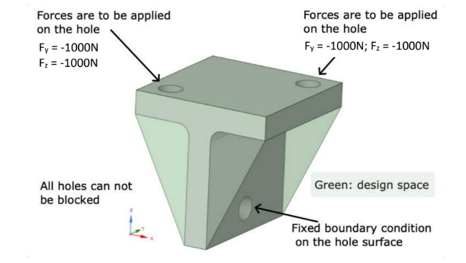
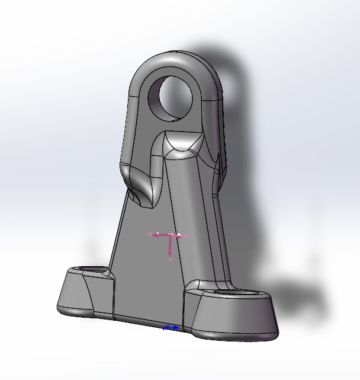
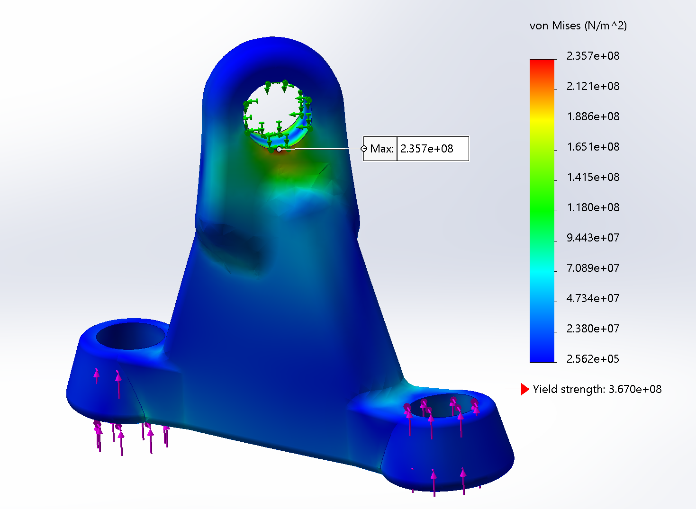
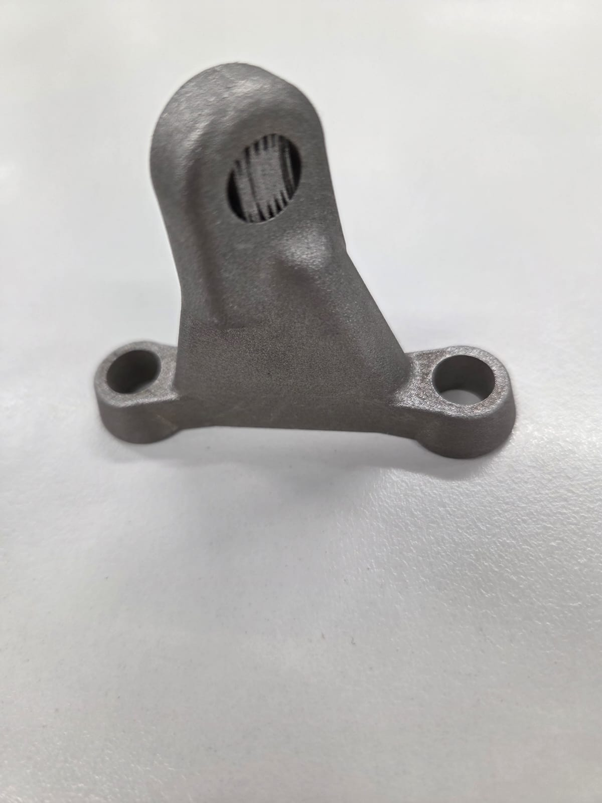

Course
MTE5886 — Additive Manufacturing of Metallic Materials
Institution
Monash University, Clayton
Outcome
70.3% Weight Reduction — Physically Printed
Project Overview
The brief was to take a real metallic structural component and redesign it using Design for Additive Manufacturing (DfAM) principles, targeting at least a 40% reduction in mass without compromising structural integrity under its original loading conditions.
The component selected was a stainless steel bracket (SS316) with two top mounting holes and a central bottom fixture point, originally weighing 510 g. The redesigned component was to be fabricated using Laser Powder Bed Fusion (LPBF) — a metal additive manufacturing process capable of producing complex, self-supporting geometries that are impossible to machine conventionally.
Design Process
Three preliminary designs were developed and evaluated before arriving at the final geometry. Each iteration was assessed against both manufacturability constraints (self-supporting geometry, minimal overhangs, no support structures required) and structural performance under FEA.
- Preliminary Design 1: Triangular plate connecting all three mounting points — simple, self-supporting, structurally direct. Established the load path logic that carried into the final design.
- Preliminary Design 2: Bridge-like arch structure — explored redistributing material to the outer load paths. Identified stress concentrations at the arch transitions.
- Preliminary Design 3 / Final: Refined triangular A-frame geometry with flared base flanges and hollow tube members — eliminates all overhangs, self-supportive at standard LPBF build angles, and balances mass removal with load distribution.
Before & After


Structural Validation — FEA
All designs were validated using static finite element analysis in SolidWorks Simulation. The material properties used were those of SS316 stainless steel: tensile strength 550 MPa, with a design allowable of 367 MPa (yield strength). Von Mises stress criterion was applied throughout.
The final design returned a maximum Von Mises stress of 235.7 MPa — well within the 367 MPa yield limit — with stresses distributed evenly across the load-bearing members and no critical stress concentrations at any geometric transitions.

Physical Outcome — LPBF Printed Part
The final design was fabricated using LPBF with post-processing by wire EDM to separate the part from the build plate. The printed component matched the CAD geometry, with clean surface definition on all load-bearing faces. Wire EDM cut marks are visible on the base, consistent with standard LPBF post-processing practice.


Key Outcomes
70.3% Weight Reduction
510 g down to 151.45 g. Target was 40%. The final design exceeded the brief by a significant margin without compromising structural integrity.
FEA Validated
Max Von Mises stress of 235.7 MPa — comfortably within the 367 MPa yield limit of SS316. Safety factor of 1.56 across the full load case.
Self-Supporting Geometry
Final design requires zero support structures during the LPBF build. All surfaces meet the critical 45° self-support angle — a core DfAM constraint that drove every design decision.
Physically Manufactured
Component was printed in SS316 via LPBF and post-processed with wire EDM. Physical part matched CAD geometry. Faculty described it as one of the stronger examples of DfAM in the cohort.